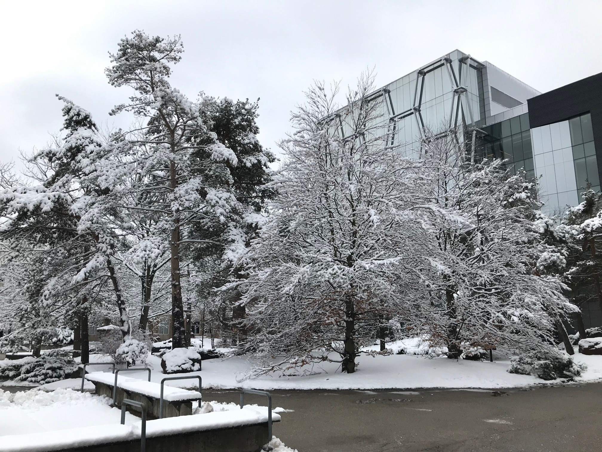

Erasmus Adventures
Issue 1
The Erasmus programme sees UCL students travelling far and wide to broaden their horizons through learning and research. Here, Hideki Itabashi and Hannah Summers tell us their stories from the 2018/19 academic year.
Hideki Itabashi
For my exchange, I studied at Rensselaer Polytechnic Institute in Troy, upstate New York, USA, taking classes in Data Analytics, Probability and Information Design.
For my Data Analytics project in R, I looked at ‘Reasons Behind Human Migration in the EU’. I predicted the number of incoming migrants for each EU state in 2017, based on historical socio-economic, education, healthcare and welfare data that I gathered and sorted from the UN, Eurostat and OECD Statistics. The workload was definitely more than what I was used to at UCL, since weekly assignments and midterms grades were emphasised alongside the final exam. I definitely recommend taking project-based classes for students who are looking to travel around.
Outside of academics, I travelled to cities along the West and East Coasts of the US, plus Toronto, Montréal and Cancun. Although I was only there for two terms, I was fortunate enough to be able to pledge a fraternity and compete nationally with the rugby squad. For those in the first and second year, studying abroad as part of the MSci International Programme is something I’d definitely recommend.
Hannah Summers
Snow. Squirrels. Study. The three pillars to my eight-month venture into the world of University of Waterloo, Ontario, Canada.
With six months below zero degrees celsius, and Christmas spent on the Great Lakes, the experience was unlike any I have had before. Days were spent watching the squirrels (both brown and black) through my window whilst I studied, exploring the local craft beers and visiting nearby lakes.
I studied a wide variety of topics from function estimation, to group theory, to classification, to the epistemology of ignorance. And I undertook national data science competitions whilst investigating the connection between the herb valerian and insomnia. I had the opportunity to experience refreshingly different styles of teaching and explore new areas of learning, in particular a fascinating look at the world of data visualisation.
Waterloo was the perfect balance of the known (the language, studying, coffee) and the unknown (the people, food and the arrival of the geese). The year was a beautiful adventure filled with many a FaceTime chat, the best burgers, and perfect crisp blue mornings. I look forward to one day returning.

Students who are interested in participating in the Erasmus programme can find out more by visiting: www.ucl.ac.uk/students/go-abroad/study-abroad-and-erasmus.